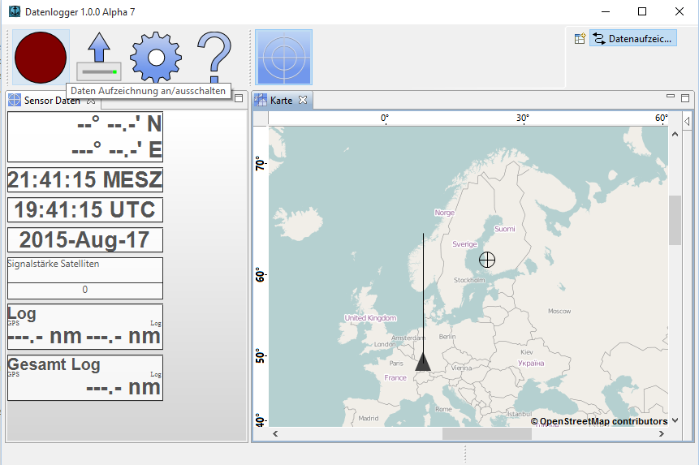
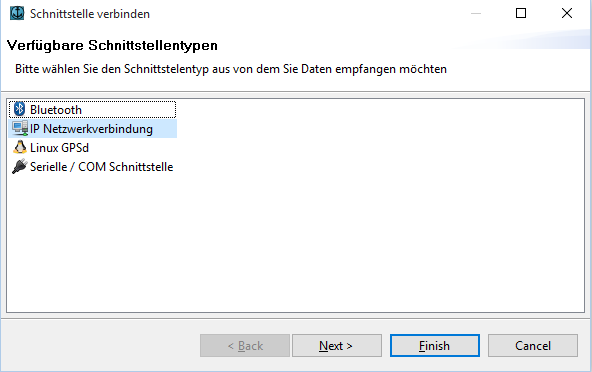
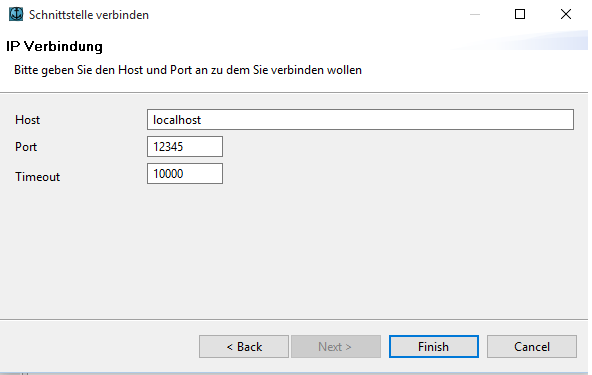

Logging Data
You may enable data logging through pressing the on button in the main menu bar.

This opens up a wizard that lets you choose the data provider you want to use.
Supported Providers are Bluetooth, TCP/IP, Serial Interfaces.
Support for Linux GPSd is still experimental.

Bluetooth
You may use Bluetooth to retrieve NMEA data if your device is capable to send Bluetooth over a data protocol called Radio Frequency Communication (RFCOMM).
In order to use it you must enable the Bluetooth receiver on your computer as well. It may be required to provide a Bluetooth password in order to connect to your device.
Note: This is being requested by the operating system and does not appear within the application.
Hint: Many Bluetooth devices use 0000 or 1234 as inital password.
Note: Bluetooth on Linux is currently not supported
Serial Provider
Serial Ports may be used to retrieve NMEA data. This interface is also known as RS232 or COM Ports and usually consists of a nine pole plug you put into your computer.
Note: On linux this provider may fail, if the device it not a true serial device causing the application to crash.
On some rare laptops the automatic detection for serial port may fail causing the application to hang. You can circumvent this situation by setting manual ports within the
preferences.

Connecting Serial Marine Equipment
For the NMEA 0183 unfortunately no standardized connector exists which is why every company uses its own connector.
Most of them offer adapter cables that have the manufacturer plug on one side and a 9 pole plug for the computer on the other side.
There is no electrical voodoo involved in these kinds of cables but all of them cost a fair amount of money probably due to their robustness.
You may find these cables by searching on the Internet as some marine shops offer them. The following section outlines what kind of connectors the manufacturer use for NMEA-0183.
Note that neither NMEA2000 nor ethernet based networks are supported and your device may offer only connectors for these. This includes manufacturer protocols such as SeaTalk or NavNet.
USB
USB is not directly supported. However many devices are capable to emulate a serial port through a native driver in which case you have a chance your device may work.
Hint: If you want to see the software's output with your hand held GPS device this may be done by setting the device to output NMEA 2.3 sentences and connecting afterwards.
IP Provider
Many devices and gateways aboard offer an IP connection. It needs to output NMEA0183 sentences which many of them do.
The Port is opened via TCP. UDP is currently not supported.
Enter the hostname, the port and an appropriate timeout. The timeout is used to detect a stale connection where no data is beeing transferred in given in milliseconds.
By configuring the data provider and pressing finish in the wizard the data will be logged to your local disk.